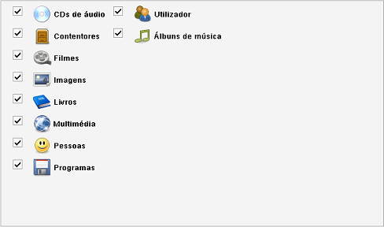

Módulos ativos
Caminho de menu: Definições > Definições > Módulos ativos

Caso não utilize um determindao módulo, pode desativá-lo aqui.
Os itens pertencentes a esse módulo não são removidos. Desmarque a caixa correspondente ao módulo para o desativar,
ou marque-a para o tornar ativo. Clique em Gravar e as definções serão aplicadas.
Desativar a funcionalidade Empréstimos
Se não utiliza o sistema de empréstimos, pode desativá-lo, desativando o módulo Pessoas.